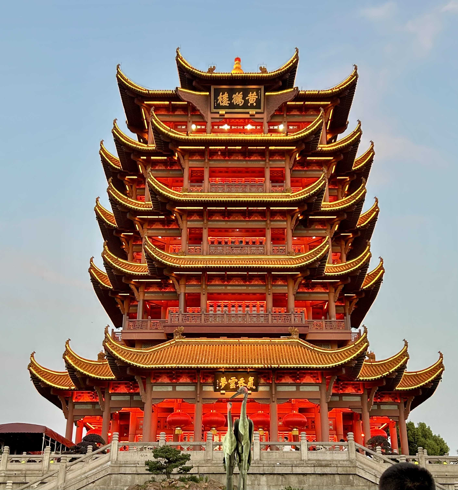
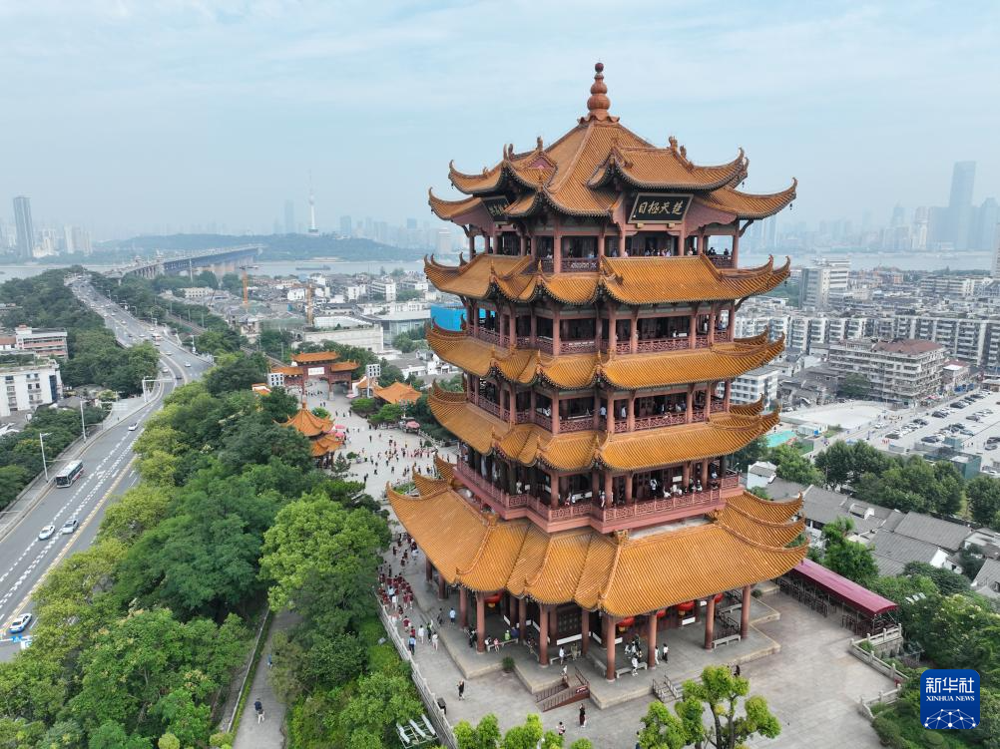
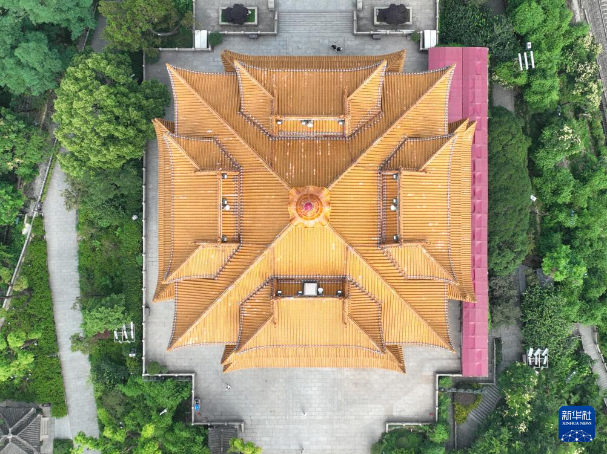

YELLOW CRANE TOWER / REFINEMENT STUDY
黄鹤楼 · 从实景到新模型
武汉 · 中国
BLENDER 模型优化记录 · 2026.10.07

立面与层级
摄影：NAO · 武汉市政府
2025.04.17

体量与材质
摄影：程敏 · 新华社
2024.06.01

冠顶与屋脊
摄影：程敏 · 新华社
2024.06.01
参照正立面、斜俯视与顶视照片调整外观。
照片来源及摄影署名详见 references/source-records.json。
V1 · 优化前
原始模型 / 同步角度
V2 · 优化后
照片参照优化 / 同步角度
播放 / 暂停
正在加载本地模型…